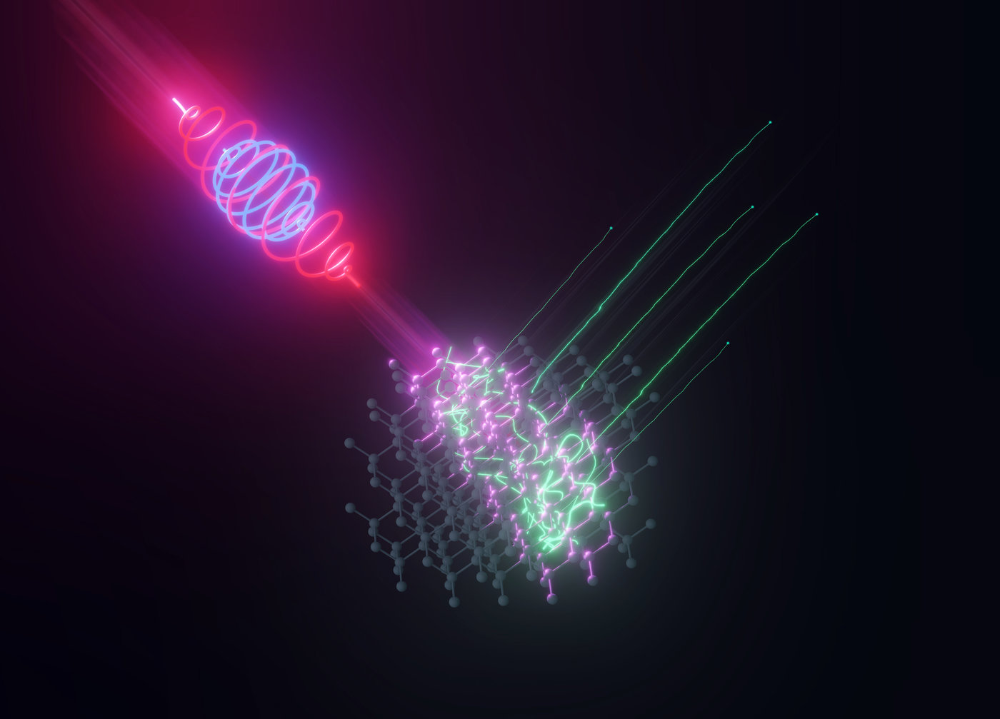
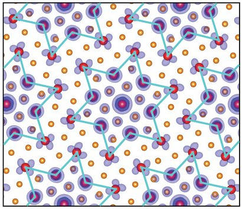
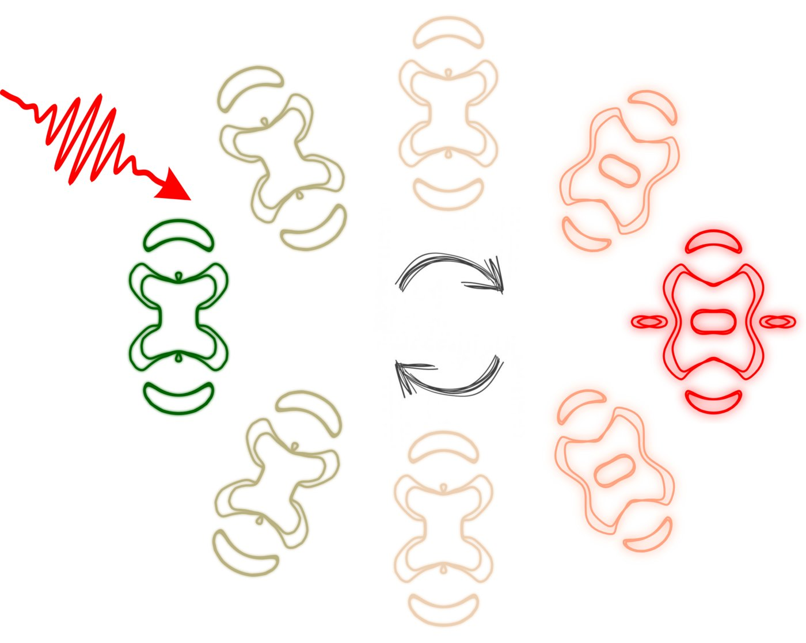
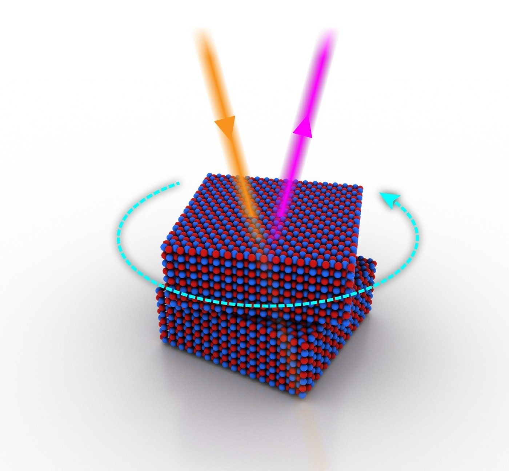
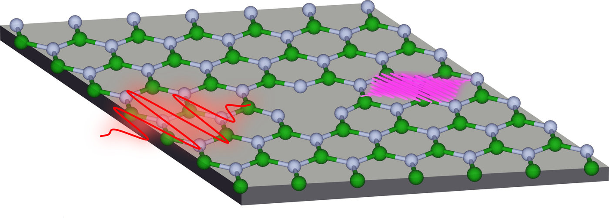
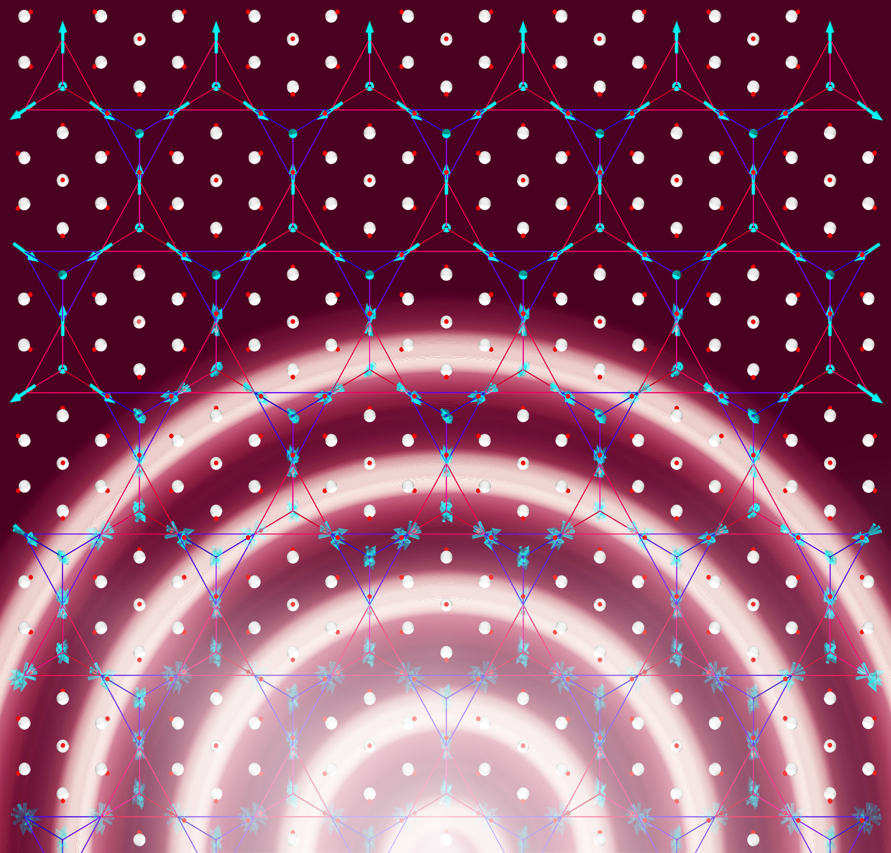
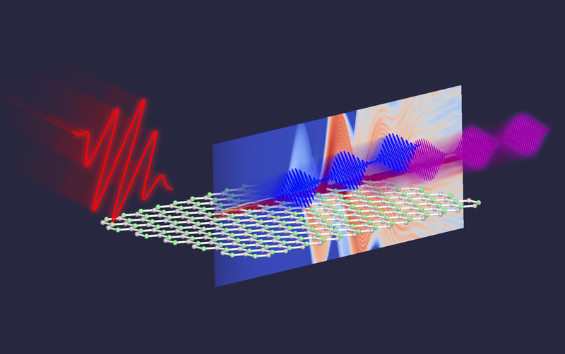
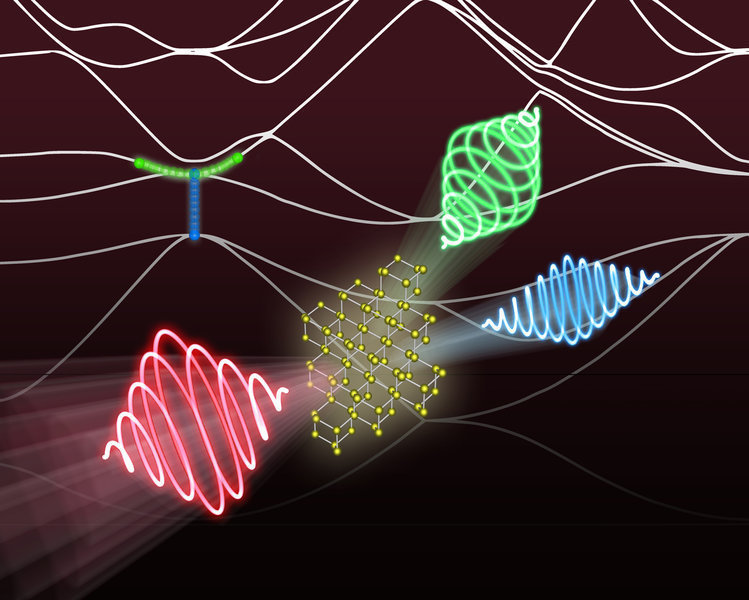

Scientific highlights
|
When light and electrons spin together
Theoreticians at the MPSD have demonstrated how the coupling between intense lasers, the motion of electrons, and their spin influences the emission of light on the ultrafast timescale. Their work has been published in npj computational materials. More |
 excites the electron dynamics in bulk Na3Bi. Due to strong spin-orbit coupling, the ‘spin-up’ electrons (red arrow) and ‘spin-down’ electrons (blue arrow) follow different motion, which can be tracked by the emitted harmonic light (blue and violet pulses).
Nicolas Tancogne-Dejean / Jörg Harms, MPSD") |
|
Laser loops create ultrafast electric currents in materials
Theoreticians at the MPSD predict that a unique laser source could produce highly controllable electric currents in any bulk material. The team’s work, now published in PRL, yields new insights for the development of ultrafast opto-electronic devices, for more efficient photovoltaics, and for the study of electron behavior in solids. More |
 |
|
New approach to calculate electron traffic jam in transition metal dichalcogenide
Though they both consist only of H2O molecules, water and ice exhibit apparently distinct characters: The former is solid and the latter is the very indispensible liquid for all living creature. Likewise, many materials of a given constituent in nature can exhibit different phases. Diamond and graphite are good examples. Both are made up of carbon atoms, but the former is transparent and electrically insulating while the latter looks black and conducts electricity. Now researchers at the MPSD and the Ulsan National Institute of Science and Technology (UNIST) in South Korea have found that the existing method to calculate a particular insulating state produces errors and suggest a new approach instead. Their work has been published in Physical Review Letters. More |
 |
|
Lighting it up: Fast material manipulation by laser
Researchers from the Fritz Haber Institute in Berlin and the MPSD have found out that ultrafast switches in material properties can be prompted by laser pulses – and why this process occurs. Their work may lead to new transistor concepts. More |
 |
|
Twistoptics: A new way to control optical nonlinearity
Researchers at Columbia University, the MPSD and the National Institute for Materials Science in Japan have managed to engineer the first technique to exploit the tunable symmetry of 2D materials for nonlinear optical applications, including laser, optical spectroscopy, imaging, and metrology systems, as well as next-generation optical quantum information processing and computing. More |
 |
|
A step towards controlling spin-dependent petahertz electronics by material defects
The operational speed of semiconductors in various electronic and optoelectronic devices is limited to several gigahertz (a billion oscillations per second). This constrains the upper limit of the operational speed of computing. Now researchers from the MPSD and the Indian Institute of Technology in Bombay have explained how these processes can be sped up through the use of light waves and defected solid materials. More |
 |
|
The taming of the light screw
Scientists from DESY, the MPSD, the University of Hamburg and the CUI Cluster of Excellence create high-order harmonics from solids with controlled polarization states, taking advantage of both crystal symmetry and attosecond electronic dynamics. The newly demonstrated technique might find intriguing applications in petahertz electronics and for spectroscopic studies of novel quantum materials. More |
 interacts with a crystalline solid (white), higher-order harmonic fields (blue and magenta) are emitted whose polarization states (linear, elliptic or circular) are determined by crystal symmetry and can be controlled by the strong-field dynamics.
© Jörg Harms / MPSD") |
|
Shedding light on Weyl fermions
Researchers from the Theory Department of the MPSD in Hamburg and North Carolina State University in the US have demonstrated that the long-sought magnetic Weyl semi-metallic state can be induced by ultrafast laser pulses in a three-dimensional class of magnetic materials dubbed pyrochlore iridates. Their results, which have been published in Nature Communications, could enable high-speed magneto-optical topological switching devices for next-generation electronics. More |
 |
|
High-energy photons from 2D materials
Scientists at the Max Planck Institute for Structure and Dynamics of Matter (MPSD) in Hamburg have demonstrated that two-dimensional materials can generate high-order harmonics with the same mechanism as atoms and molecules. This makes two-dimensional materials an attractive alternative to atoms and molecules for the generation of high-energy photons and ultrashort light pulses. Their work has been published in Science Advances. More |
 |
|
A new knob to control and create higher harmonics in solids
A research team from the MPSD, DESY, CUI and Hamburg University has demonstrated the possibility of using a new knob to control and optimize the generation of high-order harmonics in bulk materials, one of the most important physical processes for generating high-energy photons and for the ultrafast manipulation of information. More |
 |